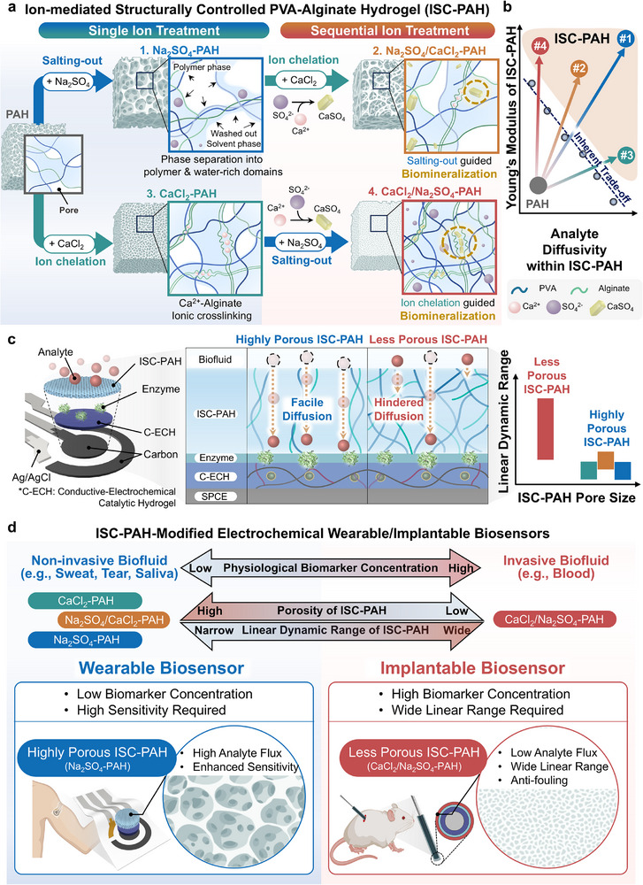

Why this research matters
Changing the order of sulfate and calcium treatments tunes the mechanics and analyte transport of poly(vinyl alcohol)–alginate sensor interfaces. The study examines how the sequence of network and pore formation changes strength and diffusion pathways, even when the ions are the same.
The problem
A hydrogel can provide both a compliant sensor contact and a route for analytes to reach the electrode. Greater strength does not always mean faster transport. This study changes the order of ion treatments to tune the internal structure of PVA–alginate gels.
How the study approaches it
Sulfate treatment promotes PVA association and crystallization through salting-out; calcium forms ionic junctions in alginate. Reversing their order changes when junctions, pores and mineral structures form. The same ions can therefore produce different interfaces through a different processing history.

Biosensor overview linking ion-treatment sequence and hydrogel structure with mechanical properties and analyte diffusion.
Dongwook Lee, Soo A Kim, Beom‐Jun Shim et al.. “Ion‑Mediated Structural Engineering of Hydrogel Interfaces for Tunable Mechanical and Analyte Diffusion Properties in Electrochemical Biosensors”. Figure 1. DOI: 10.1002/adma.202515767. CC BY 4.0. Figure content is unchanged.
Source figure and caption ↗ · DOI: 10.1002/adma.202515767 ↗ · CC BY 4.0 ↗
What was tested
Calcium-first treatment forms junctions before subsequent calcium-sulfate formation, giving a denser reinforced network. Sulfate-first treatment establishes porosity earlier. Structure, mechanics and transport measurements together explain how these architectures affect analyte access to a sensor.
What the study found
The study offers a way to select an interface for its measurement environment. Sweat sensing and insertable sensing place different demands on transport and mechanics. The structural explanation does not establish clinical accuracy for every sensor using the gel.
What remains to be answered
Comparisons need the same analyte, concentration, gel thickness and swelling state, with response time considered alongside strength. Biofluid interference and calibration during repeated loading require additional checks. A structural mechanism does not replace sensor-specific validation.
Related research
Fully integrated wearable sensor arrays for multiplexed in situ perspiration analysis
The related device combines multiplexed sweat analysis, temperature calibration and circuitry. The present study tunes transport and mechanics at the hydrogel interface.
Architecture, targets and calibration differ, so sensitivity alone is not a fair basis for comparison.
Abstract-based introductionRESEARCH NEWS
Research in the news
Unverified candidates and access limits (1)
Unverified candidate · 연세대 김자영, 서정목 교수팀, ‘단일 하이드로겔의 이온 매개 구조 제어… 체액 맞춤형 전기화학 바이오센서 인터페이스 구현’ ↗
Sources used in this summary
This summary draws on the main text and original figures. The complete supplementary materials and underlying data have not been independently reviewed.